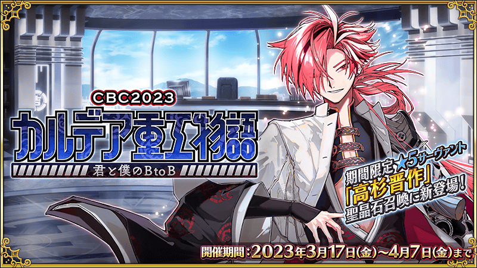
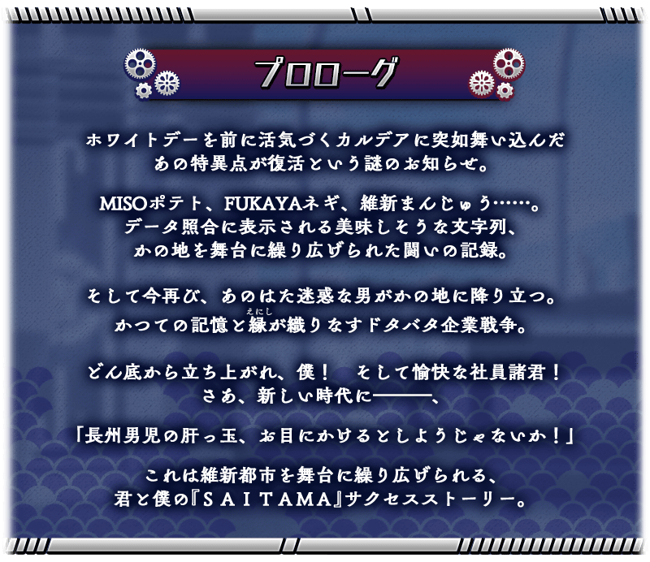
期間限定活動「CBC2023 迦勒底重工物語 ～你與我的BtoB～」預定自2023年3月17日(五)開幕！
在復活的維新都市『SAITAMA』跟其他公司當競爭對手，目標是頂級企業！
本活動中，除了享受故事的主線關卡將逐日開放外，在通過各節後會開放收集活動道具的自由關卡。
攻略活動關卡，見證故事的結尾吧！
※本頁面皆為開發中圖片。會有與實際圖片相異的情況。 ※一部份的關卡為日後開放。
◆活動舉辦期間◆
2023年3月17日(五) 17:00～4月7日(五) 11:59
◆活動參加條件◆
滿足以下條件的御主才能參加
・通過「特異點F 炎上汙染都市 冬木」
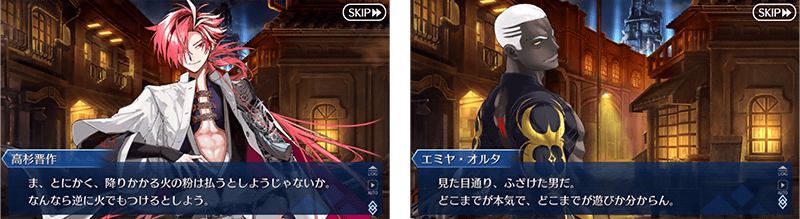
活動的遊玩方式
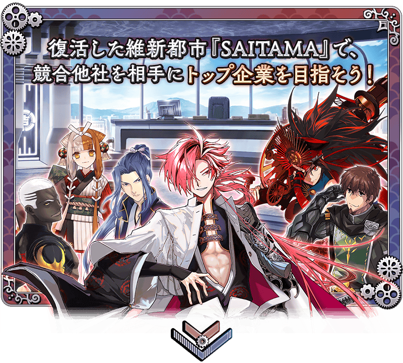 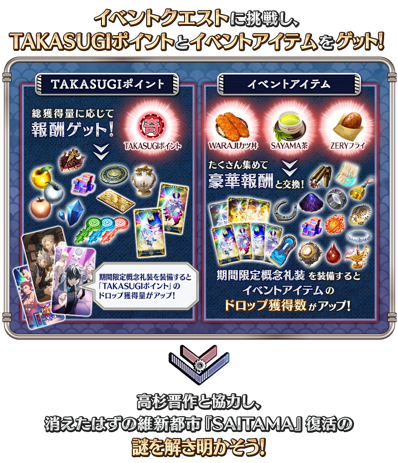 ※3月17日(五) 17:00圖片更新
享受故事的主線關卡會逐日開放。
通過主線關卡第一節的話，會開放收集活動道具的自由關卡。
之後的自由關卡是藉由通過主線關卡來開放。
※想推進每天的主線關卡，對應關卡的進行需要一定數以上的TAKASUGI點數。
【關卡的舉辦期間】
| 關卡的種類 | 舉辦期間 | 開放必須的關卡與 TAKASUGI點數 |
|---|---|---|
|
序幕(プロローグ) 主線關卡第一節 自由關卡 |
2023年3月17日(五) 17:00(預定)～ 4月7日(五) 11:59 |
- |
|
主線關卡第二節 自由關卡 |
2023年3月18日(六) 17:00～ 4月7日(五) 11:59 |
・通過主線關卡第一節 ・累計40,000點數 |
|
主線關卡第三節 自由關卡 |
2023年3月19日(日) 17:00～ 4月7日(五) 11:59 |
・通過主線關卡第二節 ・累計100,000點數 |
|
主線關卡第四節 自由關卡 |
2023年3月20日(一) 17:00～ 4月7日(五) 11:59 |
・通過主線關卡第三節 ・累計180,000點數 |
|
主線關卡第五節 自由關卡 |
2023年3月21日(二) 17:00～ 4月7日(五) 11:59 |
・通過主線關卡第四節 ・累計280,000點數 |
|
主線關卡第六節 自由關卡 |
2023年3月22日(三) 17:00～ 4月7日(五) 11:59 |
・通過主線關卡第五節 ・累計405,000點數 |
|
主線關卡第七節 後記(エピローグ) 自由關卡 |
2023年3月23日(四) 17:00～ 4月7日(五) 11:59 |
・通過主線關卡第六節 ・累計555,000點數 |

新從者「★5(SSR)高杉晉作」在期間限定的聖晶石召喚與本活動開始同時登場！
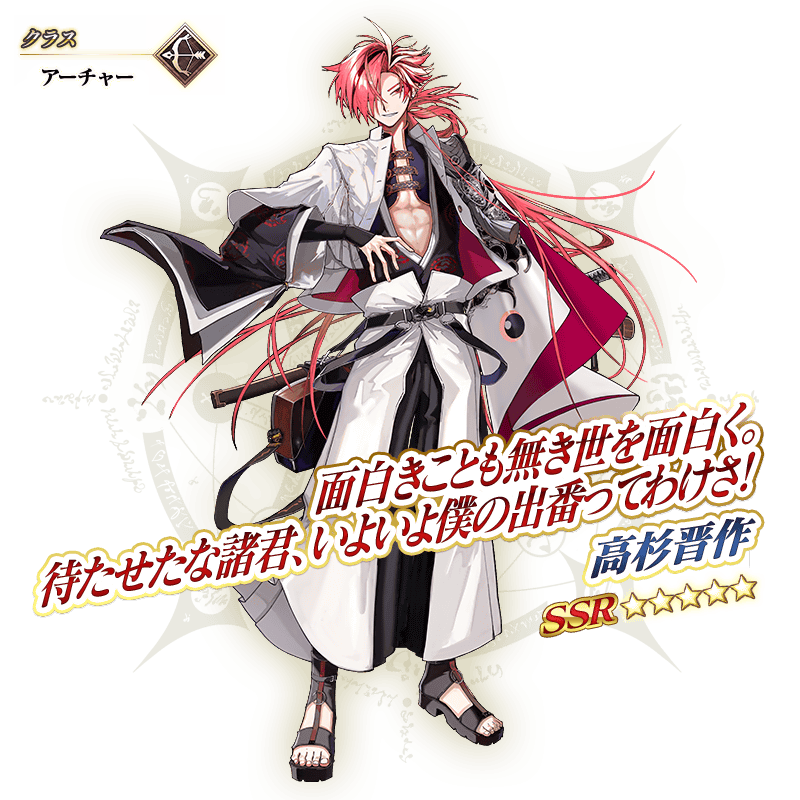
【3月23日(四) 17:00追記】
以通過期間限定活動「CBC2023 迦勒底重工物語 ～你與我的BtoB～」後記(エピローグ)及「終局特異點」的御主做為對象，開放高難易度的「挑戰關卡」。
「挑戰關卡」就算通過後也不會消失，可以變更從者和概念禮裝的組合等後無限次挑戰。 ※關卡通過報酬、戰利品、御主EXP、魔術禮裝EXP、絆點數只可在初次通過時獲得。
◆挑戰關卡開放時間◆
2023年3月23日(四) 17:00～
◆挑戰關卡參加條件◆
滿足以下條件的御主才能參加
・通過期間限定活動「CBC2023 迦勒底重工物語 ～你與我的BtoB～」的後記(エピローグ)
・通過「終局特異點」
◆挑戰關卡初次通過報酬◆
傳承結晶 1個
「TAKASUGI點數」的總獲得量到達一定量的話，可獲得達成報酬。
各種從者的培育素材外，能獲得傳承結晶等。
達成報酬可在點擊管理室(ターミナル)畫面右上的「活動報酬」鍵後顯示的「TAKASUGI點數報酬」畫面確認。
※3月17日(五) 19:15修正
※「TAKASUGI點數」的的總獲得量是計算在活動關卡中掉落所獲得的「TAKASUGI點數」。
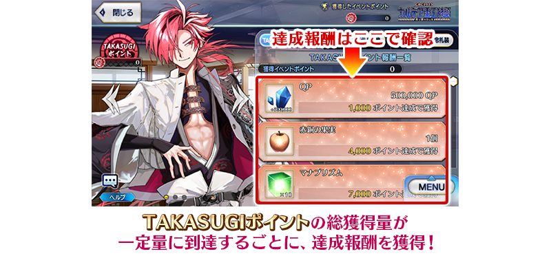
以期間限定，任意從者在個人空間(マイルーム)變得可進行撮影成拍立得風格的「迦勒底重工職員快拍」外，變得可配置2位從者。
另外，期間中個人空間(マイルーム)的背景每一段期間會切換。
敬請期待用各式各樣的背景拍攝從者！
※配置2位從者的狀態無法進行拍立得風格的撮影。
◆期間◆
2023年3月13日(一) 17:00～4月7日(五) 11:59


背景變更時間表

超值攻略方法・其1
本活動的期間中，下表的從者在活動關卡中會得到「自身的攻擊威力提升」的加成！
並且，所有的男性從者在活動關卡中會得到「絆點數獲得量提升」的效果！
※活動加成的效果量因從者而異。
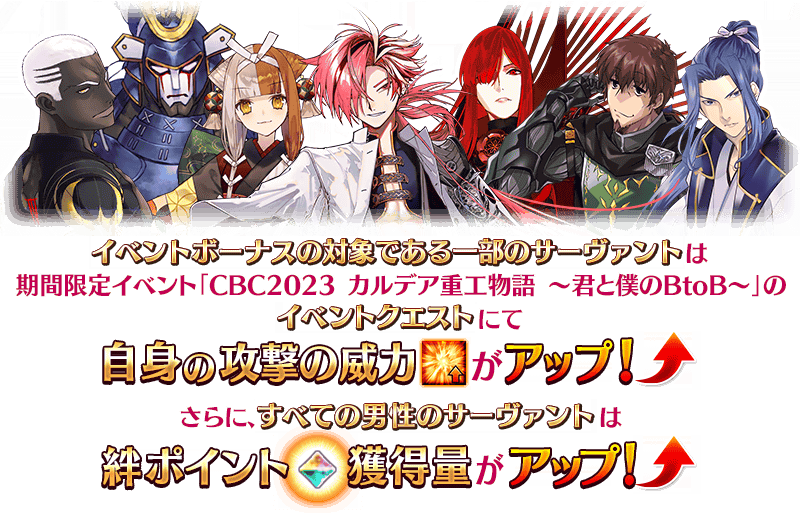
【活動加成的效果與對象從者】
| 自身的 攻擊威力 |
絆點數 獲得量 |
職階 | 稀有度 | 從者名 |
|---|---|---|---|---|
| ＋100% | 只限自身 ＋50% |
Archer | ★★★★★ | 高杉晉作 |
| Avenger | ★★★★★ | 魔王信長(織田信長) | ||
| ＋50% | 只限自身 ＋30% |
Archer | ★★★★ | Emiya〔Alter〕 |
| Lancer | ★★★ | 赫克特 | ||
| Assassin | ★ | 佐佐木小次郎 | ||
| - | Caster | ★★★★★ | 出雲阿國 | |
| - | 只限自身 ＋20% |
所有的男性從者 | ||
※3月17日(五) 18:00修正
◆有關從者的注意◆
※除了性別「男性」的從者外，下述的從者也包含在活動加成的對象。
・★5(SSR)阿斯托爾福(Saber)
・★5(SSR)沖田總司〔Alter〕(Saber)
・★5(SSR)狄奧斯庫洛伊
・★5(SSR)俄里翁
・★5(SSR)恩奇都
・★5(SSR)羅慕路斯＝奎里努斯
・★5(SSR)迦摩(Assassin)
・★5(SSR)“山之翁”
・★5(SSR)始皇帝
・★5(SSR)迦摩(Avenger)
・★5(SSR)平景清
・★5(SSR)蘆屋道滿
・★4(SR)騎士德翁
・★4(SR)凱妮絲(Lancer)
・★4(SR)阿斯托爾福(Rider)
・★4(SR)凱妮絲(Rider)
・★4(SR)鬼一法眼
・★4(SR)謎之蘭丸X
※就算成為對象從者也會有未在本活動的主線劇本登場的情況。 ※自3月12日(日) 16:00，在從者選擇畫面和從者強化畫面等，追加活動加成篩選器。由於是只顯示於活動活躍從者的便利功能，敬請活用。 ※「★5(SSR)魔王信長(織田信長)」是「★5(SSR)織田信長」靈基再臨第3階段後名稱變成「★5(SSR)魔王信長」。
超值攻略方法・其2
【3月17日(五) 17:00追記】
裝備期間限定概念禮裝讓活動道具的掉落獲得數與活動點數的掉落獲得量提升！
裝備在與本活動同時舉辦的聖晶石召喚Pick Up的期間限定概念禮裝「★5(SSR)スリー・イン・ザ・ブラック」「★5(SSR)エターナル・ローマ」「★4(SR)証明と反証」「★4(SR)教授たち的のランチタイム」「★4(SR)春陽燦々」「★3(R)フォー・ユア・レターズ」「★3(R)オールウェイ・バーン」「★3(R)宵に潤い話は枯れず」「★3(R)夜の帳に灯を」的話，活動道具「WARAJI豬排丼」「SAYAMA茶」「ZERY炸物」各自的掉落獲得數與「TAKASUGI點數」的掉落獲得量提升。
※請注意各關卡的道具掉落率並非100％。
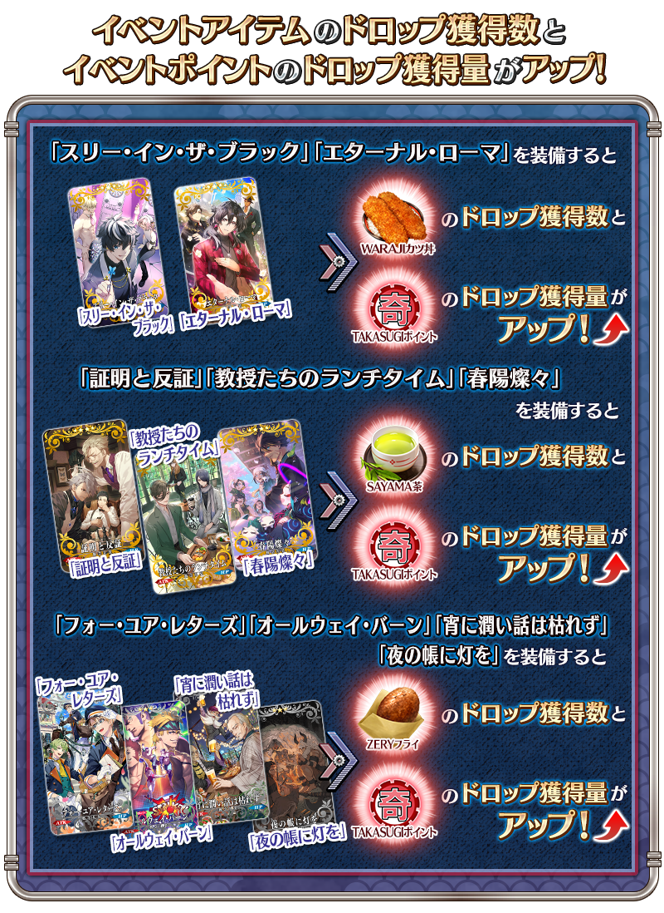
活動道具可自點擊管理室(ターミナル)畫面右上「活動報酬」鍵所顯示的「活動道具交換」畫面，交換以下的道具。
※關於傳承結晶、英靈結晶・流星之芙芙ALL★4(HP)、英靈結晶・日輪之芙芙ALL★4(ATK)的交換，在通過本活動的主線關卡後才能交換。 ※活動道具交換期間結束後「WARAJI豬排丼」「SAYAMA茶」「ZERY炸物」會消失。
◆交換期間◆
2023年3月17日(五) 17:00(預定)～4月14日(五) 11:59
◆WARAJI豬排丼能用交換的道具◆
 |
【技能強化＆靈基再臨素材】 【靈基再臨素材】 【其他道具】 |
◆SAYAMA茶能用交換的道具◆
|
【技能強化＆靈基再臨素材】 【靈基再臨素材】 【其他道具】 |
◆ZERY炸物能用交換的道具◆
|
【技能強化＆靈基再臨素材】 【其他道具】 |
【3月17日(五) 17:00追記】
強化「★4(SR)Emiya〔Alter〕」的特別關卡「從者強化關卡」，在迦勒底之門永久追加。
不僅進行對象從者的強化，也可獲得聖晶石做為關卡通過報酬。
※請注意在從者強化關卡沒有文字冒險部份。
◆追加時間◆
2023年3月17日(五) 17:00～
◆開放條件◆
持有強化對象從者，必須使其最終再臨且通過「強化關卡 Emiya〔Alter〕」。
※未持有對象從者的話，不會出現關卡。
※關卡沒有舉辦期限。
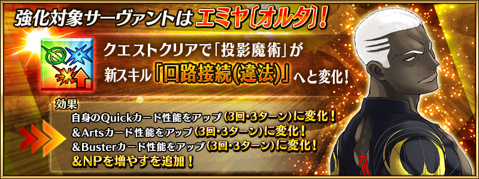
【3月17日(五) 17:00追記】
期間限定活動「CBC2023 迦勒底重工物語 ～你與我的BtoB～」的特設頁面，智慧型手機用桌面的贈送實施中！
在社群媒體分享特設頁面就能下載，請務必使用。
◆配發期間◆
2023年3月17日(五) 17:00～4月7日(五) 11:59
◆特設頁面◆
https://www.fate-go.jp/special/2023-cbc2023/
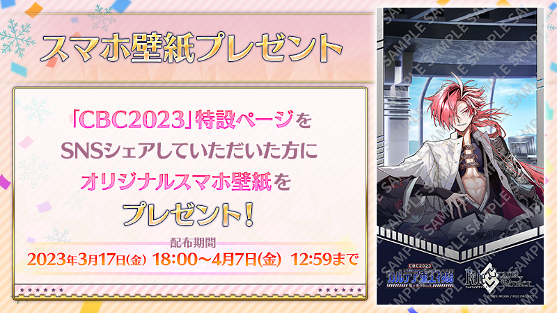
【3月24日(五) 17:00追記】
其他還有期間限定「迦勒底男性精選2023」等的情報公開中！
關於詳情，請自下述橫幅確認。
■「迦勒底男性精選2023」詳細情報

■「CBC2023 迦勒底重工物語 高杉晉作Pick Up召喚」詳細情報

■「CBC2023 迦勒底重工物語 坂本龍馬(Lancer)Pick Up召喚」詳細情報

■「CBC2023 迦勒底重工物語 魔王信長(織田信長)Pick Up召喚」詳細情報

■「CBC2023 Pick Up召喚」詳細情報

■「白色情人節回憶Pick Up召喚」詳細情報